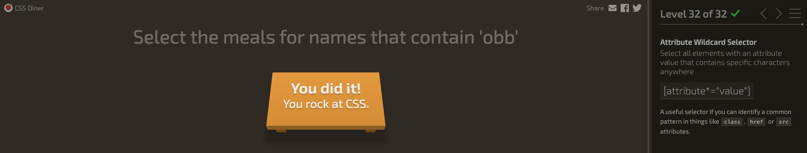

My thoughts on the video that I watched was that it was very touching to see someone go through great lengths to assist someone else.
Creating something that is bigger than you or someone else that is capable of doing normal functions, such as hovering over something,
something that someone else may have difficulties with. The other thing I enjoyed seeing was the dragon bar. This is a feature that can help people
that don't have use of their hands, can use their voice as recognition. Another thing I found interesting that he talked about is the way we make choices
on where we decide to put images and how they impact accessibility. He goes in depth about how the contrast if too high, can impact someone that has low vision.
If very single background is high, the webpage becomes invisible where they cannot see it. Before watching this video, and the classes that I took at Pulaski Tech,
The way a webpage is designed in depth, especially when it came to a person that may have a disability accessing something I created, was not a second thought for me. The thrill
of creating something that others get to browse was just as important. This video shed light that it takes a special craft to appease a larger crowd.
My completion of the froggy assignment
My completion of the CSS diner assignment
